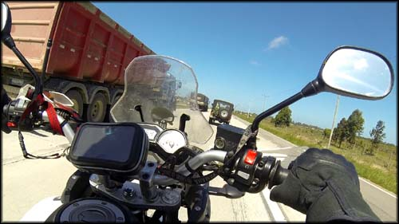
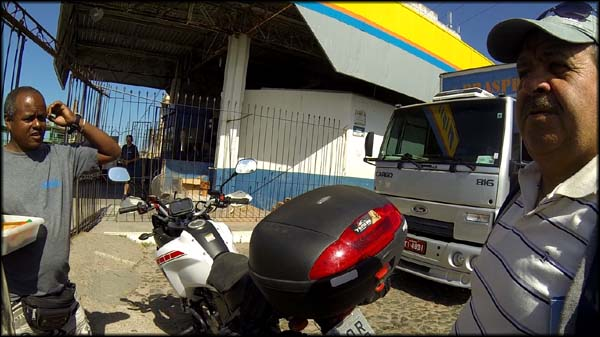
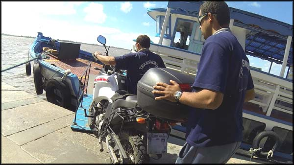
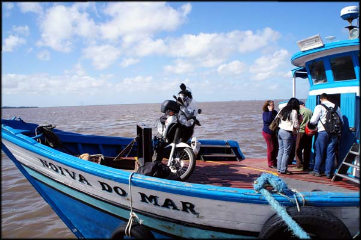
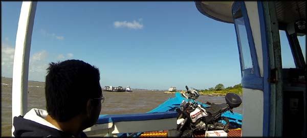
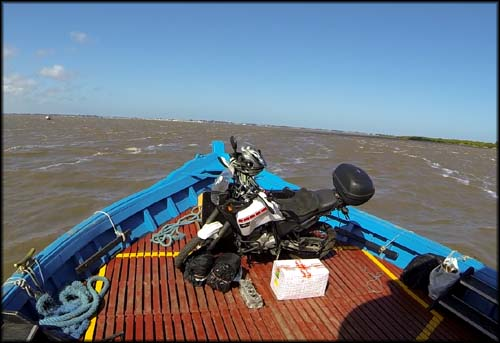
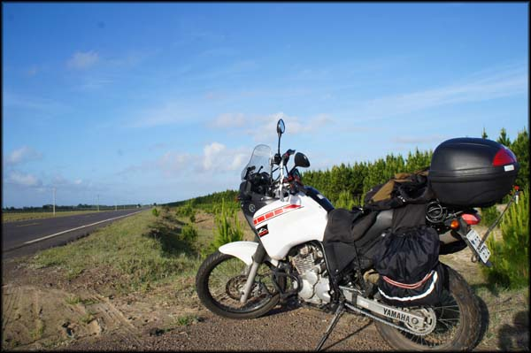
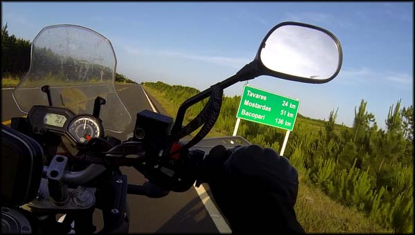
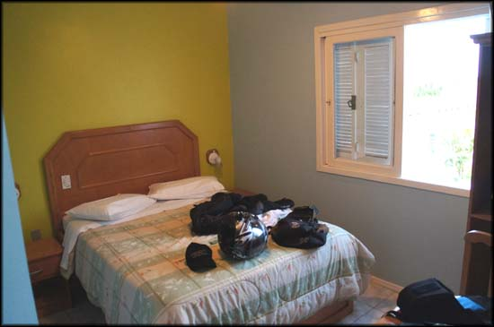
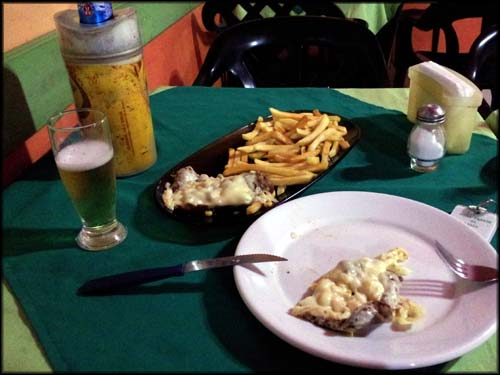

Após ter passado pela fantástica Reserva Ecológica do Taim, continuei meu rumo indo para Rio Grande, pela RS-471. Minha intenção era descobrir onde poderia pegar a tal barca que se usa para atravessar a Lagoa dos Patos, do Rio Grande até a pequena São José do Norte.
Tinha lido brevemente sobre essa possibilidade, pesquisando na véspera da internet, mas não consegui descobrir exatamente onde e como se faz essas manobras.
Rio Grande - RS
A chegada em Rio Grande foi um impacto bem negativo, depois de tanta beleza que eu havia presenciado, e tanta organização e simplicidade no Uruguai. Trânsito intenso de caminhões pesados nas rodovias do Rio Grande
A quantidade de caminhões de carga pesada era absurda, um movimento dos infernos por causa do estaleiro, enfim, o caos típico do que move a economia daquela cidade. Com dificuldade, encontrei um rumo para o que me parecia ser o caminho até o porto, mas fiquei receoso e parei em um posto de gasolina para me informar. Me disseram que eu estava certo, que aquela era uma das rotas até o porto. Aproveitei para abastecer (4.709 Km rodados).
Cheguei finalmente na parte principal da cidade. Mas continuei perdido. Aliás, nem sabia pelo que procurar. Fui em várias ruas, e voltei. Perguntei a algumas pessoas, e descobri que tinha que achar um mercado de peixes, pois a travessia de balsa era por lá. Mas tudo lá parecia um grande mercado de peixes pra mim.
Até que eu peguei uma rua pequena, e encostei para falar com um homem que saía de um galpão. Antes de eu falar qualquer coisa, ele já disse logo que eu estava na contramão. Putz, não sabia mesmo, se havia alguma placa ali, estava perdida em meio à poluição visual.
Mas, apesar do primeiro impacto negativo - me deu um “esporro” (?) - o cara ficou tentando me ajudar. E até agora eu me impressiono, lembrando como consegui entender o que ele estava dizendo. Sério, estava mais fácil entender os uruguaios do interior do país falando rápido em espanhol do que aquele sujeito. Acho que além do sotaque extremamente forte, ele tinha a língua presa, sei lá.
Entendi que logo à frente eu poderia atravessar a moto pela lagoa usando os barcos, que fazem a travessia normal de pessoas, e que não precisaria ir até as balas, que ficavam mais longe, seriam mais caras e demorariam mais.
Cheguei a moto mais pra frente, empurrando, mesmo porque estava na contramão, e o cara veio me acompanhando, todo curioso sobre de onde eu vinha e pra onde iria. Parei bem em frente a um barco, fiz sinal pro marinheiro que estava a bordo, e ele disse que aquele barco já estava atrasado, e que logo chegaria outro. Bom, pelo ao menos vi que era verdade, eu poderia embarcar a moto.
Tentando entender as explicações dos dedicados informantes, ri muito
Nisso chegou um vendedor ambulante de doces, e também muito curioso sobre o alienígena aqui, e tentando ajudar sobre a travessia da moto no barco. Eu ria sozinho tentando entender o que os caras falavam com um sotaque bem carregado, e tentava responder às perguntas que eu entendia. As que eu não entendia sorria e fingia que entendi. Após alguns minutos outro barco atracou, o marinheiro fez um sinal pra eu entrar com a moto, e eu percebi que era muito comum atravessar a lagoa com motos nos barcos normais mesmo.
Tripulação levando a monstrinha a bordo para a travessia
A motoca com os alforges presos nas laterais não passava subindo a rampa do cais até o barquinho. Tive que desamarrar rapidamente a bagagem, enquanto dois caras do barco já empurravam a monstrinha pra cima. Eles a amarraram na proa. Muito insólita a cena, ao menos para mim.
Motoca devidamente acomodada para a viagem de barco
Então, tive que entrar na estação, e comprar as passagens. Eu e a moto custamos R$ 6,75. Paguei lá na bilheteria, não recebi bilhete algum, pulei no barco junto com um monte de passageiros, e esperei começar a nova aventura.
Procurei um lugar num banco mais perto, para ficar de olho na moto e nas bagagens que deixei jogadas no chão ao lado. Eu não fazia muita ideia do que fazer quando chegasse do outro lado da lagoa. Tentei puxar assunto com um rapaz, que de início não me deu muita ideia. Depois, do nada, começou a falar, perguntar de onde eu vinha, e para onde estava indo.
Pegando dicas durante a travessia, a motoca descansando um pouquinho
Já foram quase 5 mil Km bem rodados nessa trip, um repouso pro motor
Então ele disse que era veterinário, que já morou no Rio por um ano fazendo uma especialização, que trabalhava em Rio Grande, mas morava em São José do Norte, onde iríamos desembarcar. Só neste momento eu descobrira para onde eu mesmo estava indo, que coisa. Pedi dicas do que fazer no caminho, do que esperar, da estrada. Ele conhecia tudo muito bem e me deu várias informações que fui anotando em meu bloquinho porque nesta etapa minha cabeça já não guardava informação alguma.
De lá eu seguiria pela “Estrada do Inferno”... putz, já vi que vou passar mais alguns maus bocados. Então ele explicou para não me preocupar, que a estrada levava esse nome porque antes não era asfaltada, e ele inclusive uma vez levou 8 horas para percorrer 40km de carro, que toda hora atolava. Mas agora era asfalto, e novo. Ufa.
Eu estava preocupado sobre onde achar hospedagem, não tinha informação alguma para os próximos quilômetros. Pelo avançar da hora, chegamos a conclusão - eu e meu novo consultor de viagens - de que eu deveria rodar no máximo até Mostardas, onde chegaria ainda de dia. Isso porque dali pra frente, a estrada estaria muito esburacada, e não seria aconselhável passar à noite.
Chegamos no destino e o barco atracou. Agradeci a ajuda, desembarquei a moto, amarrei a bagagem, saí do porto e entrei numa rua pequena ao lado, para olhar no GPS onde eu estava e para onde ir exatamente. A essa altura eu já ria da minha situação, totalmente perdido, sem destino, mas um “sem destino” em um nível maior do que em toda a viagem, que vinha sendo meio assim mesmo. Eu estava no ápice da falta de rumo.
Vi no mapa que antes de eu chegar em Mostardas, passaria por Tavares. Lembrei que essa cidade era um dos locais onde aquele motociclista que conheci na Serra do Rio do Rastro tinha visto um bom hotel por um bom preço, e eu tinha anotado. Mais uma opção, que bom.
Parti então para a Estrada do Inferno. Por cerca de 120Km circulei nesse pedaço da BR-101, rodeado de plantações de pinus, uma espécie de pinheiro. O visual era bacana, o verde da folhagem dessas árvores é bem intenso, bem vivo, e fazia um belo contraste com o azul do céu e suas nuvens brancas. Nenhum posto de gasolina no trajeto, ainda bem que abasteci em Rio Grande.
A Estrada do Inferno não é mais a mesma. Lindo visual.
O asfalto da antiga Estrada do Inferno estava bem novo, parecia de fato ter sido feito bem recentemente. Não se via buracos. Em compensação, a qualidade da obra é de se lamentar. Um asfalto livre de buracos, mas com ondulações severas. Até para leigos em construção civil, como sou eu, parecia óbvio que foi uma obra feita “nas coxas”, sem o devido preparo do solo, e não vai durar muito. Em determinados trechos as depressões na pista são tão profundas que a sensação é a mesma que passar com a moto em um buraco de verdade. Lamentável.
Assim, esse asfalto novo mas mal feito, e os fortes ventos que ainda me perseguiam pelo sul, fizeram que o trajeto fosse bem cansativo e demorado, com média de velocidade em 70km/h por precaução, diante das súbitas rajadas de vento lateral, e das ondulações-buraco. No meio do nada, precisei parar para descansar as pernas e a coluna, que sofria.
Estrada do Inferno, indo para Tavares/RS
Tavares - RS
Quando finalmente cheguei na altura de Tavares/RS, considerei que já tinha rodado o bastante por aquele dia. Resolvi procurar o hotel que o cara tinha me dito, e eu anotado: um tal de Grand Parque Hotel. Entrei na cidade, em um trecho de 1Km de offroad - que depois viria a descobrir se tratar de um acesso secundário, mas a placa na BR-101 não dizia isso.Rodei um pouco, passei em frente a dois hotéis, e continuei procurando aquele específico. Acabou a cidade, e não achei. Perguntei num posto de gasolina, ninguém conhecia. Putz. O cara deve ter dito errado, confundiu as cidades, sei lá. Mas no posto me disseram que um dos hotéis pelo qual eu tinha passado era bom. Fui lá conferir o Hotel Parque da Lagoa.
Perguntei o preço à simpática recepcionista: R$ 80,00. Putz, não esperava gastar isso tudo ali naquela cidade pequenininha, que eu nunca nem tinha ouvido falar. Mas estava muito cansado para ir até a próxima cidade. Aceitei o preço, e fui ver o quarto. Realmente as instalações eram boas, bem bacana o hotel.
Quarto do hotel Parque Lagoa em Tavares, instalações bem confortáveis
Depois percebi o porquê do preço elevado: era um destino turístico relacionado a passeios e trilhas em jipes 4x4, vários adesivos de clubes de jipeiros colados nos vidros das janelas. Nunca tinha ouvido falar do turismo de aventura naquele lugar.
Tomei um banho, e fui procurar onde jantar. Tinha perguntado à recepcionista, que disse existir uma churrascaria, uma pizzaria e uma barraquinha de sanduíches. Saí de moto, frio do cão. Primeiro tentei achar a tal churrascaria, não consegui, não devo ter entendido direito as instruções. Passei em frente a pizzaria, e resolvi ficar por lá mesmo.
Pizzaria é um forma de dizer, é uma lanchonete misturada com botequim. Pizzaria Arco Íris. Uns caras debatiam lá assuntos de plantação e fazendas, um papo entediante desses. Peguei o cardápio, e vi que tinha comida de verdade além de pizzas. Pedi um que era o “prato da casa”, um bife com queijo, ervilhas, milho, e batatas fritas. Imaginei um prato bacana.
Bebia minha cerveja quando veio meu prato. Uma porção minguada de batatas-fritas, e um bife de tamanho reduzido, coberto com um pouco de queijo derretido sobre parca quantidade de ervilha e milho enlatado. Me lembrou quando tem aquelas sobras de almoço que ficam largadas na geladeira, e a gente dá uma incrementada com o que tiver para animar a comer. Bom, não tinha jeito, comi tudo, continuei com fome. Bebi mais uma garrafa de cerveja, paguei R$ 29,50 e voltei para o hotel, ainda puto com a janta minguada e nada saborosa.
Jantar em Tavares, fraquinho...
Aproveitei o pouco de energia que ainda tinha para pesquisar brevemente o que poderia conhecer no caminho em direção ao Rio de Janeiro no dia seguinte. Vi o tal Túnel Verde, do qual já tinha ouvido falar. Nada mais que me chamasse a atenção. Era isso então. No dia seguinte seguiria pela BR-101.